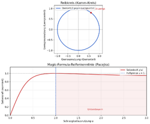

OmegaSim Wiki – die Idee dazu stammt von Gnen54. Hier stehen die offenen Artikel von Nutzer Luuke42 unter der Lizenz CC BY-SA 4.0.
Pacejka
Stand dieses Artikels: OmegaSim 1.5.107 vom 2026-11-17 · Firmware des Autos: nicht bekannt (OmegaSim liest die Firmware-Version nicht aus)
Dieser Text wurde mithilfe von KI erstellt (Claude) und ist nicht in jedem Punkt von Menschen geprüft. Fehler bitte direkt verbessern oder auf der Diskussionsseite melden, siehe Mitmachen. Die öffentliche Fassung auf luuke42.github.io/omegasim kann älter sein als der hier beschriebene Stand.


Die Magic Formula („Zauberformel“) von Hans B. Pacejka (siehe Hans B. Pacejka auf Wikipedia) beschreibt, wie viel Seitenkraft ein Reifen in der Kurve überträgt. In OmegaSim steckt sie im Fahrgefühl Pacejka und sorgt dafür, dass ein Auto am Haftgrenz-Limit nicht einfach weiterlenkt, sondern wirklich schiebt oder das Heck ausbrechen lässt.
Dieser Artikel erklärt die Formel von Grund auf – für alle, die noch nie davon gehört haben. Die technische Abrechnung in der App steht in Fahrverhalten.
Neuerungen seit 1.3.93
Aktualisiert: Pacejka (Stand 1.5.107)
Das Problem: Was ein Reifen kann
Das Einzige, was das Auto mit der Straße verbindet, sind die vier Reifen. Alles Fahren – Beschleunigen, Bremsen, Kurven – läuft über ihre Kraft. Ein Reifen kann die Straße aber nur mit einer begrenzten Kraft packen, und er teilt diese Kraft in zwei Richtungen auf:
- Längs (nach vorn/hinten): Beschleunigen und Bremsen.
- Quer (seitlich): die Kraft, die das Auto in der Kurve auf der Bahn hält.
Wer beides gleichzeitig will – etwa in der Kurve bremsen –, muss die Kraft aufteilen. Dafür gibt es den Reibkreis (weiter unten).
Der Schräglaufwinkel: der „Eingang“ des Reifens
Wenn man das Lenkrad dreht, zeigen die Vorderräder in eine Richtung. Das Auto fährt aber nicht sofort genau dorthin, sondern zunächst in die alte Richtung weiter. So entsteht ein Winkel zwischen zwei Richtungen:
- der Richtung, in die das Rad zeigt, und
- der Richtung, in die das Auto tatsächlich fährt.
Dieser Winkel heißt Schräglaufwinkel (α). Er ist die Eingabe, auf die der Reifen antwortet. Wichtig: Ein Reifen braucht diesen kleinen Winkel, um überhaupt Kurvenkraft zu bilden. Ganz ohne Schräglauf gibt es keine Seitenkraft.
Die Reifenkennlinie: die „Antwort“ des Reifens
Trägt man die Seitenkraft über den Schräglaufwinkel auf, erhält man immer dieselbe typische Kurve:
- Bei kleinem Winkel steigt die Kraft fast gerade (der Reifen ist „steif“): etwas mehr Lenkung, etwas mehr Kraft.
- Bei größerem Winkel wird die Zunahme flacher, bis die Kraft ihr Maximum erreicht – das ist die Haftgrenze.
- Hinter dem Maximum fällt die Kraft wieder ab: noch mehr Lenkung bringt nichts mehr, das Auto beginnt zu rutschen.
Diese Kurve heißt Reifenkennlinie. Sie ist bei jedem Reifen etwas anders, hat aber immer diese S-Form.
Die Magic Formula: eine Formel für die Kurve
Hans B. Pacejka und Egbert Bakker (1992) fanden heraus, dass sich diese S-Kurve mit einer Formel und vier Zahlen nachbilden lässt. Deshalb „Zauberformel“ – sie passt wie eine Schablone auf viele gemessene Reifen:
y(u) = sin( C · atan( B·u − E·(B·u − atan(B·u)) ) )
Die vier Zahlen formen die Kurve:
| Kürzel | Name | Was es bewirkt |
|---|---|---|
B |
Steifigkeit | wie steil die Kurve am Anfang steigt („steifer“ Reifen) |
C |
Formfaktor | die grundsätzliche Form und Höhe der Kurve (typisch ~1,3 für Seitenkraft) |
D |
Scheitelhöhe | die größte Kraft, also das Maximum |
E |
Scheitelform | wie spitz der Scheitel ist (negativ: ausgeprägter Scheitel, danach stärkerer Abfall) |
Untersteuern und Übersteuern
Der Bereich hinter dem Scheitel ist das eigentliche „Fahrgefühl“: Was passiert, wenn man über die Haftgrenze hinauslenkt?
- Untersteuern (Vorderachse am Limit): Das Auto will nicht mehr in die Kurve, es schiebt geradeaus – die Räder zeigen in die Kurve, aber das Auto fährt außen weiter. Die Vorderachse hat ihre Haftgrenze erreicht; mehr Lenkeinschlag bringt keine zusätzliche Kurvenkraft, die Bahn wird nur weiter außen.
- Übersteuern (Hinterachse am Limit): Das Heck bricht aus, das Auto dreht sich schneller, als gelenkt wurde – es „schnappt“ ein. Die Hinterachse hat ihre Haftgrenze erreicht; der Wagen rotiert stärker als die Vorderräder zeigen.
Welche Achse zuerst ihre Grenze erreicht, entscheidet, ob das Auto unter- oder übersteuert. Das kann man im Fahrgefühl Pacejka einstellen.
Was die Haftgrenze verschiebt
Dieselbe Reifenkennlinie, nur die Achslast und der Reibkreis verschieben, welche Achse zuerst über den Scheitel gerät:
- Bremsen entlastet die Hinterachse und belastet die Vorderachse. Die Hinterachse verliert Seitenhalt → beim Anbremsen in der Kurve kommt das Heck (Übersteuern beim Einlenken, Trail-Braking).
- Gas entlastet die Vorderachse und belastet die Hinterachse. Die Vorderachse verliert Seitenhalt → unter Gas schiebt die Front (Untersteuern).
- Antrieb hinten: Der Antrieb verbraucht Querkraft-Budget (Reibkreis). Wer mitten in der Kurve Gas gibt, hat hinten weniger Seitenhalt → Leistungsübersteuern.
Wie OmegaSim das Übersteuern simuliert
Der Kern liegt in pacejkaStep() (src/40-physics.js). Er rechnet je Achse eine Ausnutzung u – die Querkraft, geteilt durch die Haftgrenze. u = 1 ist der Scheitel; u > 1 heißt „hinter dem Scheitel“.
uV = quer · vorn / grip (Vorderachse) uH = quer · hinten / grip / rest / HeckReserve (Hinterachse)
Der Wirkfaktor wirk(u) sagt, wie viel Kraft ein Reifen bei dieser Ausnutzung noch bringt – unterhalb des Scheitels 1, dahinter fällt er ab:
wirk(u) = u ≤ 1 ? 1 : pacY(u) / u
- Untersteuern – Vorderachse über dem Scheitel (
uV > 1): Der Lenkbefehl wird mitwirk(uV)gekürzt. Mehr Einschlag bringt also keine zusätzliche Drehung, das Auto schiebt geradeaus. Zusätzlich entlastet Gas die Front (Regler „Lenkentlastung unter Gas“). - Übersteuern – Hinterachse weiter über dem Scheitel als die Front (
uH > 1unduH > uV): Die App gibt Einschlag in die Kurve dazu. Es giltzielO = min(pacUeberMax, 1 − wirk(uH)), also genau das, was die Hinterachse nicht mehr an Kraft bringt. Der Servo wird dann
servo = servo · pacUnter + pacRichtung · pacUeber
– das Auto dreht von selbst weiter ein, das Heck kommt.
Drei Eigenschaften machen das Übersteuern „echt“:
- Es hält an. Einmal ausgelöst, klingt das Heck nicht von selbst ab: Solange man Gas oder Bremse hält (
pedalHalt), bleibtpacUeberstehen – gedeckelt aufpacejkaHaltMaxSekunden und nicht bei Schritttempo. - Gegenlenken fängt es. Lenkt man gegen die Rutschrichtung (
gegen), sinkt der Zuschlag schnell (Zeitkonstante 0,1 s statt 0,25 s) und das Auto beruhigt sich. - Es kostet Vortrieb. Solange das Heck rutscht, senkt
pacVortriebdie Antriebskraft (bis 55 %), damit das Auto nicht weiter einzieht.
Woher das Übersteuern kommt, gibt der Schalter Übersteuern (Pacejka) vor (ab Werk aus):
- Beim Anbremsen: Bremsen entlastet hinten → das Heck kommt beim Einlenken.
- Beim Leistungsübersteuern: Über 40 % Gas wird
uHzusätzlich erhöht (bispacejkaLeistung1,4) – Vollgas in der Kurve bringt das Heck. - Ab Werk ist hinten über
pacejkaHeckReserve = 1,220 % mehr Seitenhalt: das Standard-Pacejka ist deshalb leicht untersteuernd, das Übersteuern ist eine bewusste Einstellung.
Der Reibkreis
Die Kraft des Reifens ist begrenzt und teilt sich zwischen Längs (Gas/Bremse) und Quer (Kurve) auf. Zeichnet man beide als Achsen, liegt die Grenze ungefähr auf einem Kreis – dem Reibkreis (auch Kamm-Kreis):
Längsanteil = √(1 − Queranteil²)
Wer in der Kurve schon viel Querkraft braucht, hat für Gas oder Bremse nur noch den Rest. Deshalb kann man nicht mit Vollgas und vollem Lenkeinschlag gleichzeitig das Maximum herausholen.
Animation: So lenkt ein Auto unter Bremsen

Beim Einlenken unter Bremsen (Trail-Braking) teilt sich die Reifenkraft in Längs- und Queranteil. Solange der Kraftpfeil im Reibkreis bleibt, hält das Auto die Spur. Wird zu stark gebremst, zeigt der Pfeil nach außen, und das Auto schiebt geradeaus (Untersteuern).
So nutzt OmegaSim die Pacejka
Im Fahrgefühl Pacejka (Steuerungsmodus „Pacejka“, seit 0.8) rechnet die App mit der Magic Formula, um die Haftgrenze der Achsen zu bestimmen. Unterhalb der Grenze fährt das Auto wie im normalen Physik-Modus; erst darüber greift die Formel ein:
- Die Formel ist normiert:
u = 1ist der Scheitel undy(1) = 1. - Die Höhe
Dist damit fest 1; die eigentliche Grenze steckt in der Haftgrenze (Vorgabe 0,7). - Untersteuern: Ist die Vorderachse über der Grenze, wird der Lenkbefehl reduziert.
- Übersteuern (eigener Schalter): Ist die Hinterachse über der Grenze, lenkt das Auto von selbst weiter ein – die genaue Rechnung im Abschnitt Wie OmegaSim das Übersteuern simuliert.
Die konkreten Werte im Code (src/40-physics.js):
| Größe | Wert | Bedeutung |
|---|---|---|
pacejkaC |
1,3 | Formfaktor für Seitenkraft |
pacejkaE |
−0,5 | ausgeprägter Scheitel |
pacB() |
≈ 2,1355 | sorgt dafür, dass der Scheitel genau bei u = 1 liegt |
pacejkaGrenze |
0,7 | Querausnutzung am Scheitel (Haftgrenze) |
pacejkaHeckReserve |
1,2 | hinten 20 % mehr Seitenhalt: ab Werk leicht untersteuernd |
pacejkaUebersteuern |
Schalter | Übersteuern an (beim Bremsen und unter Gas) |
pacejkaUeberMax |
0,35 | größter Lenkzuschlag beim Übersteuern (Anteil des Servos) |
pacejkaLeistung |
1,4 | wie stark Vollgas den Seitenhalt hinten senkt |
pacejkaRutschVortrieb |
0,55 | wie viel Vortrieb beim Rutschen verloren geht |
pacejkaHaltMax |
2,0 | wie lange ein Rutsch ohne Gegenlenken hält (Sekunden) |
Wo man das einstellt
- FAHREN → Kachel Fahrgefühl → Pacejka (ebenso in der Garage und am Cockpit-Knopf).
- Unter Optionen → Fahrgefühl → Voreinstellungen liegt Pacejka als einer der zehn Sätze.
- Nach einer Neuinstallation ist Pacejka die Vorgabe.
- Der Schalter Übersteuern (Pacejka) liegt unter Optionen → Allgemein (ab Werk aus).
Siehe auch
Quellen im Code
src/40-physics.js:pacY()(die Formel),pacB()(Scheitel suchen),pacejkaStep(),pacGasFaktor()src/98-presets.js:PRESETS– die Werte des Fahrgefühls Pacejka
Weblinks
- Browserfassung, Android-App und Quellcode: Links auf der Hauptseite